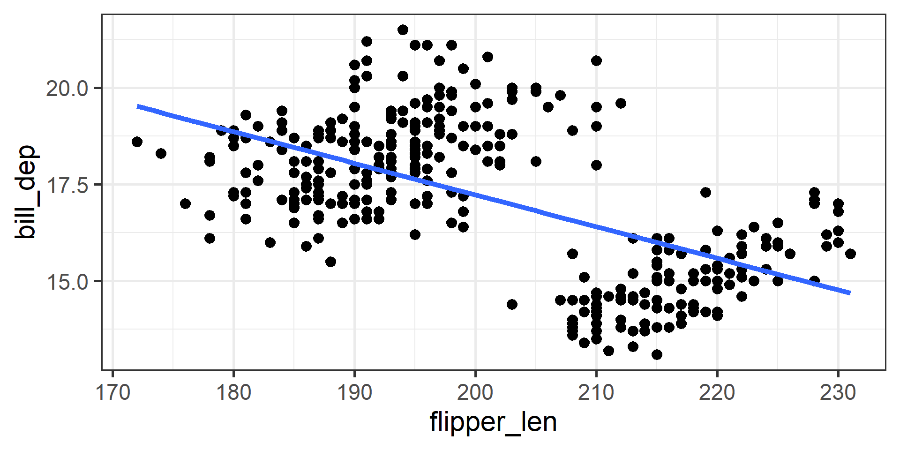
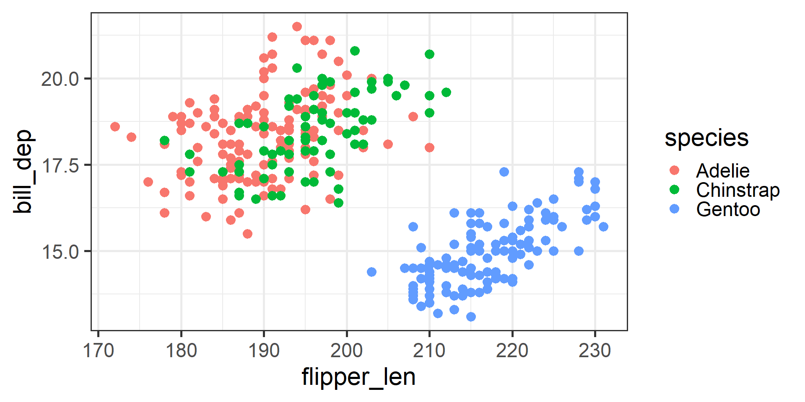
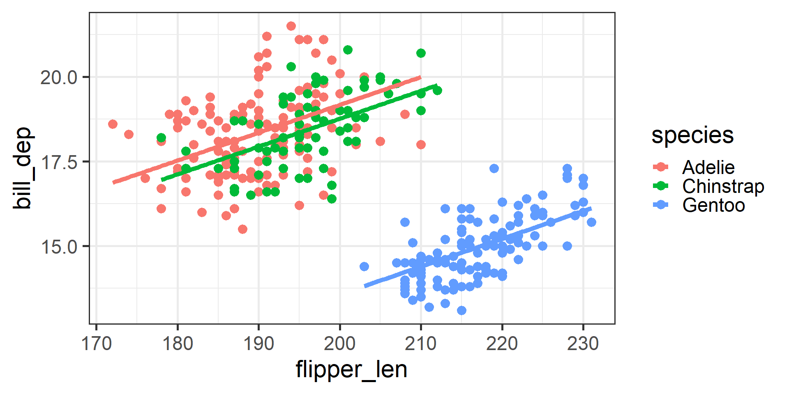

# A tibble: 2 × 5
term estimate std.error statistic p.value
<chr> <dbl> <dbl> <dbl> <dbl>
1 (Intercept) 33.6 1.25 27.0 1.39e-86
2 flipper_len -0.0820 0.00618 -13.3 1.23e-32Data 200: Lecture 9
Linear regression with multiple predictors
Medina - CSU Channel Islands
Recap
Last week we learned about simple linear regression
\[y_i = b_0 +b_1x_{1i} + \epsilon_i\]
While our models sometimes generally captured the trend, there still was a good amount of prediction error.
Maybe we can create a better predictive model by using more than one explanatory variable (aka predictor)!
Simple linear regression = only one \(X\)
\[y_i = b_0 +b_1x_{1i} + \epsilon_i\]
Multiple linear regression = multiple \(X\)’s
\[y_i = b_0 +b_1x_{1i} + b_2 x_{2i} + ... + b_p x_{pi} \epsilon_i\]
Ex: Penguins model
In your homework you looked at the penguins data.
Let’s see if we can build a good predictive model for a penguin’s bill depth (\(Y\)).
Model 1
We will start by using a penguin’s flipper length as a predictor (\(X\)) for it’s bill depth (\(Y\)).
| Variable | Symbol | Relationship | Type |
|---|---|---|---|
| Bill depth | \(y\) | Response | Numeric |
| Flipper length | \(x_1\) | Predictor | Numeric |
Model 1 Visually
Estimating Model 1

Predicted Bill Depth = 33.6 + -0.1 \(\times\) Flipper Length
Assessing fit of Model 1
Estimated Model 1:
Predicted Bill Depth = 33.6 + -0.1 \(\times\) Flipper Length
Is this line a good fit for the data?
Root Mean Squared Error (RMSE) can help us asses!
The predictions from Model 1 are off by roughly 1.6 mm, on average.
Our data only have bill depths between 13 mm and 21.5 mm, so this model is not doing a great job…
Model 2
Let’s also consider using both body mass and flipper length!
| Variable | Symbol | Relationship | Type |
|---|---|---|---|
| Bill depth | \(y\) | Response | Numeric |
| Flipper length | \(x_1\) | Predictor | Numeric |
| Body mass | \(x_2\) | Predictor | Numeric |
Model 2 Visually
It gets harder/impossible to visualize our model the more predictors we have. Instead we can still look at a plot of \(Y\) and one \(X\) at a time to see if we think they are linearly related.
Fitting Model 2
# A tibble: 3 × 5
term estimate std.error statistic p.value
<chr> <dbl> <dbl> <dbl> <dbl>
1 (Intercept) 35.8 1.78 20.1 7.92e-60
2 flipper_len -0.101 0.0126 -8.01 1.82e-14
3 body_mass 0.000375 0.000220 1.70 8.92e- 2Predicted Bill Depth = 35.8 + -0.1 \(\times\) Flipper Length
+ 0.0004 \(\times\) Body Mass
Assessing Model 2 fit
Estimated Model 2:
Predicted Bill Depth = 35.8 + -0.1 \(\times\) Flipper Length
+ 0.0004 \(\times\) Body Mass
Is this line a good fit for the data?
Hmmmm, not much better.
Examining the data
What is causing this split in the data??
Accounting for species

Now we see a much different (positive) trend!
Model 3
Let’s using flipper length and species to predict flipper length!
| Variable | Symbol | Relationship | Type |
|---|---|---|---|
| Bill depth | \(y\) | Response | Numeric |
| Flipper length | \(x_1\) | Predictor | Numeric |
| Species | \(x_2\) | Predictor | Categorical |
Model 3 visually

We use the geom_parallel_slopes() function from the moderndive R package. (geom_smooth() would do different behavior we won’t go into in this class!)
Estimating Model 3
# A tibble: 4 × 5
term estimate std.error statistic p.value
<chr> <dbl> <dbl> <dbl> <dbl>
1 (Intercept) 2.72 1.52 1.78 7.56e- 2
2 flipper_len 0.0823 0.00801 10.3 1.05e-21
3 speciesChinstrap -0.409 0.151 -2.71 7.01e- 3
4 speciesGentoo -5.61 0.249 -22.5 2.40e-69Predicted Bill Depth = 2.7 + 0.1 \(\times\) Flipper Length
+ -0.4 \(\times\) I(Species = Chinstrap)
+ -5.6 \(\times\) I(Species = Gentoo)
Assessing Model 3 fit
Estimated Model 3:
Predicted Bill Depth = 2.7 + 0.1 \(\times\) Flipper Length
+ -0.4 \(\times\) I(Species = Chinstrap)
+ -5.6 \(\times\) I(Species = Gentoo)
| Model | Predictors | RMSE |
|---|---|---|
| 1 | Flipper Length | 1.6 |
| 2 | Flipper Length & Body Mass | 1.59 |
| 3 | Flipper Length & Species | 0.97 |
Examining Model 3
Estimated Model 3:
Predicted Bill Depth = 2.7 + 0.1 \(\times\) Flipper Length
+ -0.4 \(\times\) I(Species = Chinstrap)
+ -5.6 \(\times\) I(Species = Gentoo)
- What are those I() functions?
- What about the Adelie penguins?
Categorical predictors
Indicator functions
I(Species = Chinstrap) and I(Species = Gentoo)
The I() function is
- Called an indicator function
- 1 if true, and 0 if false
- Used for categorical predictors (since we can’t do math with categorical variables)
Categorical Predictors (\(X\)’s)
Predicted Bill Depth = 2.7 + 0.1 \(\times\) Flipper Length
+ -0.4 \(\times\) I(Species = Chinstrap)
+ -5.6 \(\times\) I(Species = Gentoo)
- Recall there are three levels for species, but notice only 2 species levels appear in our model
- Reference level is the omitted level for a categorical variable
- For every categorical variable with \(k\) levels, there will be \(k-1\) predictors in the model (because of math…)
Predicted Bill Depth = 2.7 + 0.1 \(\times\) Flipper Length
+ -0.4 \(\times\) I(Species = Chinstrap)
+ -5.6 \(\times\) I(Species = Gentoo)
Predicted Bill Depth for a Gentoo penguin with a flipper length of 200mm:
2.7 + 0.1 \(\times\) 200 + -0.4 \(\times\) 0 + -5.6 \(\times\) 1 = 17.1 mm
Predicted Bill Depth for a Chinstrap penguin with a flipper length of 200mm:
2.7 + 0.1 \(\times\) 200 + -0.4 \(\times\) 1 + -5.6 \(\times\) 0 = 22.3 mm
Predicted Bill Depth for an Adelie penguin with a flipper length of 200mm:
2.7 + 0.1 \(\times\) 200 + -0.4 \(\times\) 0 + -5.6 \(\times\) 0 = 22.7 mm
Invidiual versus shared model
Why don’t we just split the data set up by species and fit a line for each?
By using a single model for all of our data:
- we pool information across the different species. This can lead to lower error (more precise prediction)
- allows for shared slope, different y-intercepts
Model 4
Now let’s use flipper length, species, and body mass in our model!
| Variable | Symbol | Relationship | Type |
|---|---|---|---|
| Bill depth | \(y\) | Response | Numeric |
| Flipper length | \(x_1\) | Predictor | Numeric |
| Species | \(x_2\) | Predictor | Categorical |
| Body mass | \(x_3\) | Predictor | Numeric |
Estimating Model 4
# A tibble: 5 × 5
term estimate std.error statistic p.value
<chr> <dbl> <dbl> <dbl> <dbl>
1 (Intercept) 7.72 1.43 5.39 1.36e- 7
2 flipper_len 0.0317 0.00870 3.65 3.09e- 4
3 speciesChinstrap -0.152 0.135 -1.13 2.61e- 1
4 speciesGentoo -5.94 0.221 -26.8 1.54e-85
5 body_mass 0.00124 0.000125 9.93 1.45e-20Predicted Bill Depth = 7.7 + 0.03 \(\times\) Flipper Length
+ -0.2 \(\times\) I(Species = Chinstrap)
+ -5.9 \(\times\) I(Species = Gentoo)
+ 0.0012 \(\times\) Body Mass
Assessing Model 4 fit
Estimated Model 4:
Predicted Bill Depth = 7.7 + 0.03 \(\times\) Flipper Length
+ -0.2 \(\times\) I(Species = Chinstrap)
+ -5.9 \(\times\) I(Species = Gentoo)
+ 0.0012 \(\times\) Body Mass
Comparing Models
| Model | Predictors | RMSE |
|---|---|---|
| 1 | Flipper Length | 1.6 |
| 2 | Flipper Length & Body Mass | 1.59 |
| 3 | Flipper Length & Species | 0.97 |
| 4 | Flipper Length & Species & Body Mass | 0.86 |
We used RMSE to compare models, there are other commonly used metrics!
Model Evaluation
Common evaluation metrics
- \(R^2\)
- Adjusted \(R^2\)
- Root Mean Square Error (RMSE)
\(R^2\)
\(R^2\) is the proportion of variation in \(Y\) explained by model.
- Informs about how well the model fits the data
- Bounded between 0 and 1
- Should only be used to compare models with the same number of predictors!!
\(R^2\)
# A tibble: 1 × 12
r.squared adj.r.squared sigma statistic p.value df logLik AIC BIC
<dbl> <dbl> <dbl> <dbl> <dbl> <dbl> <dbl> <dbl> <dbl>
1 0.341 0.339 1.61 176. 1.23e-32 1 -646. 1298. 1310.
# ℹ 3 more variables: deviance <dbl>, df.residual <int>, nobs <int>Model 1 explains 34% of the variation in Bill Depth.
Adjusted \(R^2\)
A major issue with \(R^2\) is that it will always increase when you add another predictor \(X\), even if it is not a better model.
A more responsible metric to use is Adjusted \(R^2\), which penalizes having more predictors in your model.
Adjusted \(R^2\)
When comparing models with multiple predictors we rely on Adjusted \(R^2\)
# A tibble: 1 × 12
r.squared adj.r.squared sigma statistic p.value df logLik AIC BIC
<dbl> <dbl> <dbl> <dbl> <dbl> <dbl> <dbl> <dbl> <dbl>
1 0.341 0.339 1.61 176. 1.23e-32 1 -646. 1298. 1310.
# ℹ 3 more variables: deviance <dbl>, df.residual <int>, nobs <int># A tibble: 1 × 12
r.squared adj.r.squared sigma statistic p.value df logLik AIC BIC
<dbl> <dbl> <dbl> <dbl> <dbl> <dbl> <dbl> <dbl> <dbl>
1 0.346 0.343 1.60 89.9 4.85e-32 2 -645. 1298. 1313.
# ℹ 3 more variables: deviance <dbl>, df.residual <int>, nobs <int>Root Mean Square Error
\(RMSE = \sqrt{\frac{(y_1-\hat y_1)^2 + (y_2-\hat y_2)^2 + ... + (y_n-\hat y_n)^2}{n}}\)
- “Essentially” measuring average prediction error for our model
- Lowest possible value is 0
- Same units as \(Y\)
The predictions from model 1 are, on average, off by 1.6 mm.
The predictions from model 4 are, on average, off by 0.86 mm.
Overfitting
Can we keep adding all the variables and try to get an EXCELLENT model fit?
Overfitting
We are fitting the model to sample data.
Our goal is to build a model that will predict well on on other data (with unknown \(Y\)).
If we make our model too perfect for our sample data, the model may not perform as well with other data.
In this case we would be overfitting the data.
We can use model validation techniques.
Splitting the data
To avoid overfitting we can split our data
- Some of the data will be reserved for estimating our model (called training your model)
- The rest of the data will be reserved for evaluating the prediction of our model (called testing your model)
Splitting the data (Train vs. Test)
Load the rsample and modelr packages and set a seed.
Let’s use 75% of our sample data to train, then the other 25% to test our model.
Training Model 4
Fit the model with the training data
Testing Model 4
In-sample (train) RMSE
Out-of-sample (test) RMSE
Comparing out-of-sample RMSE
| Model | Predictors | Out-of-sample RMSE |
|---|---|---|
| 1 | Flipper Length | 1.598 |
| 2 | Flipper Length & Body Mass | 1.607 |
| 3 | Flipper Length & Species | 0.941 |
| 4 | Flipper Length & Species & Body Mass | 0.86 |